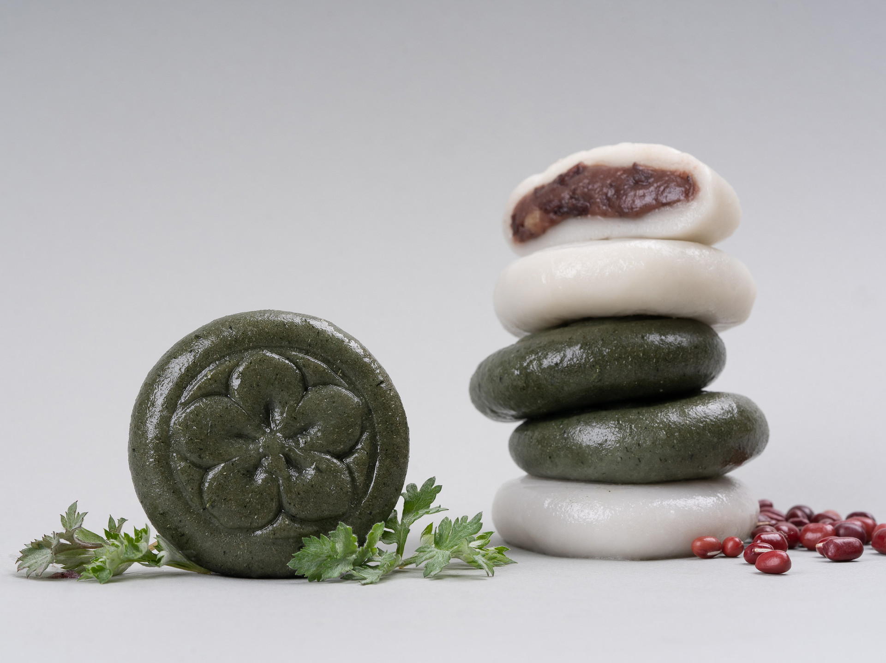
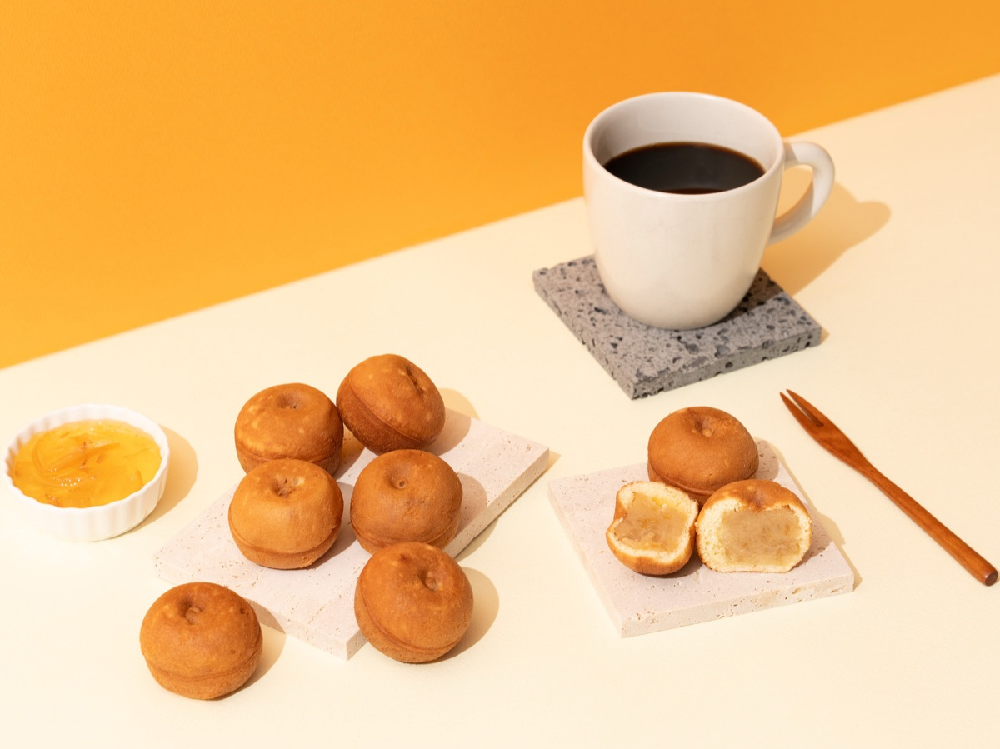
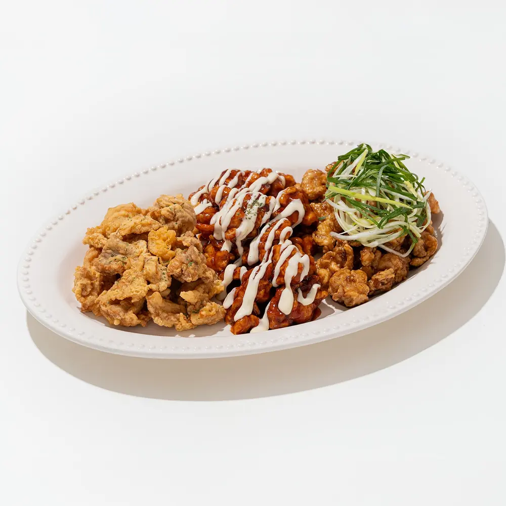
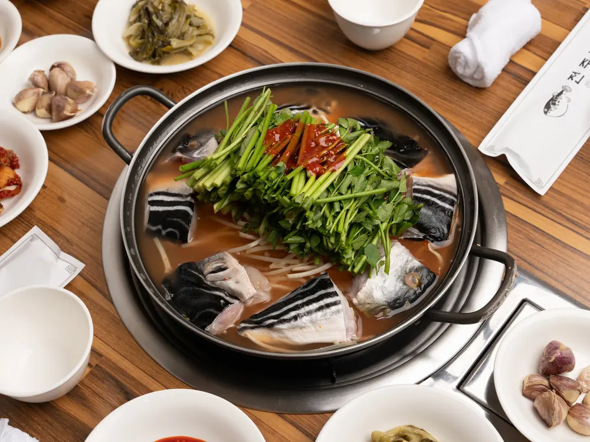
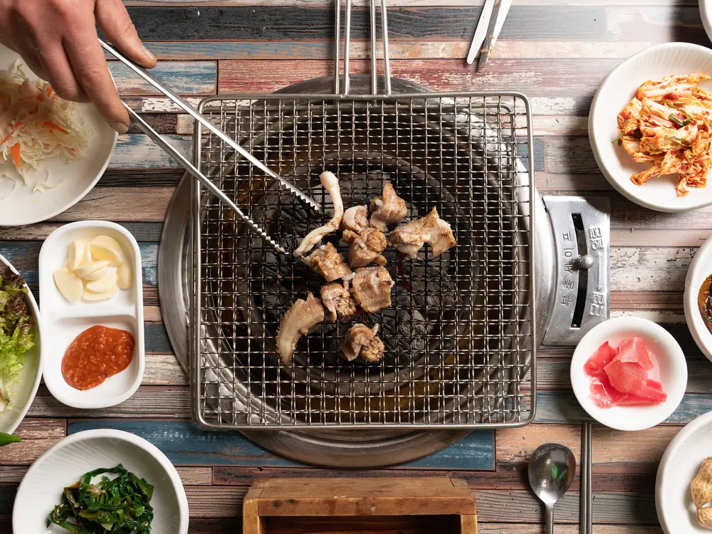

30만 원부터
1~2시간 내외
대표 메뉴 최대 5종
기본 보정본 10컷
Result
실제 촬영 결과물
메뉴의 질감과 색감이 판매 채널에서도 선명하게 보이도록 촬영합니다.





Process
촬영은 이렇게 진행됩니다
상담·견적
촬영할 메뉴 수와 사진 활용처를 확인합니다.
현장 촬영
준비된 메뉴와 매장을 1~2시간 내외로 촬영합니다.
보정본 전달
판매 채널에 바로 쓸 수 있도록 기본 10컷을 보정합니다.
Use Case
업종별 촬영 사례
대표 치킨 메뉴를 한 번에 촬영해 사진 톤을 맞추고 네이버 플레이스용 이미지로 정리했습니다.
제품별 단독 컷과 연출 컷을 촬영해 인스타그램과 팝업 홍보용으로 구성했습니다.
음료와 대표 메뉴, 매장 분위기를 촬영해 플레이스 대표 사진과 SNS 오픈 안내용으로 구성했습니다.
실제 촬영 사례를 바탕으로 내용을 정리했습니다.
Price & Inquiry
푸드 촬영 패키지
30만 원부터
기본 패키지는 대표 메뉴 최대 5종과 최종 보정본 10컷 기준으로 구성됩니다. 추가 메뉴·추가 보정·매장 촬영은 필요한 범위를 확인한 뒤 견적을 안내합니다. 촬영할 메뉴 수와 사진 활용처를 알려주세요.
촬영 견적 받기